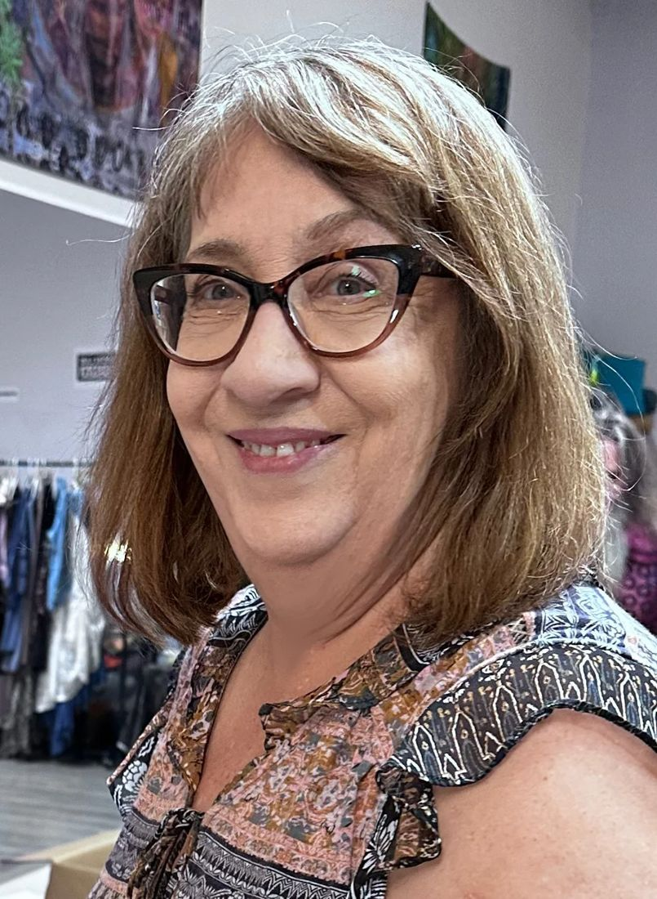

Denise Barr
Volunteering for Fashion Lab Sedona through all things fashion is her way of giving back and connecting with community. She started out as a graphic artist for various design and print companies in Orange County California, and later became a fashion and graphic designer for MycraPac Designer Wear in the Bay Area, Art Director for Nevada Magazine, and Technical Fashion Designer at Jaquelyne Love designs in Lake Tahoe.
Denise and Mike Martinet have collaborated on a fusion of graphics and fashion using direct digital fabric printing at BarrMartDesigns.com.